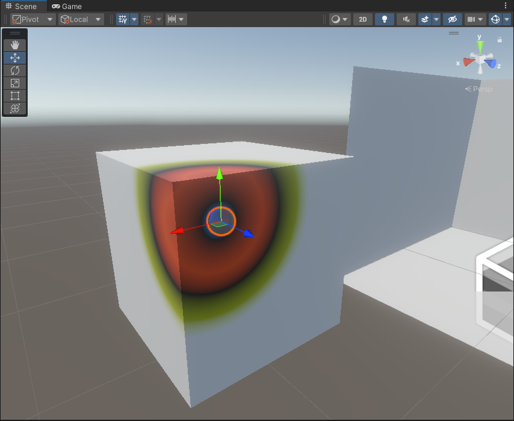
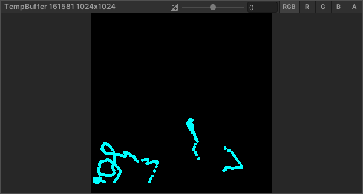
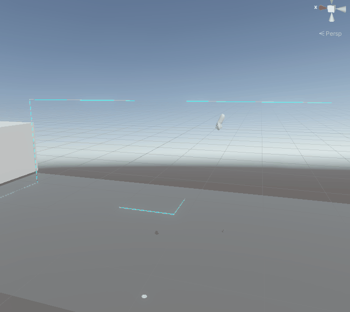

喷涂、绘制与填充
喷涂与绘制
又是一个烂大街的效果，但毕竟还没有做过。这里记录和总结一下。
最为出名的应该就是老任的Splatoon了，不仅是视觉效果，整个游戏的玩法都是建立在喷涂上的。
另一个有印象的就是V社的alyx的开头一章上的玻璃或者黑板上用水彩绘制了。
最近Unity官方也分享了一个视频，利用了SDF，效果也很好。
实现
最基础的想法就是用世界坐标来判断是否接触

然后要求模型有一套不重叠的UV，使用这个UV作为顶点着色器的坐标输出，把接触的部分在UV空间下绘制到一张RT上。

// 使用UV作为顶点着色器的坐标输出
float4 uv = float4(0, 0, 0, 1);
uv.xy = float2(1, _ProjectionParams.x) * (OUT.uv.xy * 2 - 1);
OUT.positionHCS = uv;最后再使用这张RT去渲染就好了。
简单贴一下
CBUFFER_START(UnityPerMaterial)
float4 _BaseMap_ST;
float4 _SplatColor;
float3 _position;
float _radius;
CBUFFER_END
Varyings vert(Attributes IN)
{
Varyings OUT;
OUT.positionHCS = TransformObjectToHClip(IN.positionOS.xyz);
OUT.uv = TRANSFORM_TEX(IN.uv, _BaseMap);
float4 uv = float4(0, 0, 0, 1);
uv.xy = float2(1, _ProjectionParams.x) * (OUT.uv.xy * 2 - 1);
OUT.positionHCS = uv;
OUT.positionWS = TransformObjectToWorld(IN.positionOS.xyz);
return OUT;
}
half4 frag(Varyings IN) : SV_Target
{
half4 color = SAMPLE_TEXTURE2D(_BaseMap, sampler_BaseMap, IN.uv);
float3 distence = IN.positionWS - _position;
float distenceLength = length(distence);
if (distenceLength < _radius)
{
color = _SplatColor;
}
else
{
clip(-1);
}
return color;
}
然后是对应的RenderFeature的pass
public override void Execute(ScriptableRenderContext context, ref RenderingData renderingData)
{
if(renderTexture!=null && material!=null)
{
foreach (var splatable in Splatable.splatables)
{
var cmd = CommandBufferPool.Get("SplatRenderPass");
cmd.SetRenderTarget(splatable.splatTexture);
cmd.ClearRenderTarget(true, false, Color.black);
cmd.SetViewProjectionMatrices(Matrix4x4.identity, Matrix4x4.Ortho(0, 1, 0, 1, -1, 1));
material.SetVector("_position", splatable.targetPen.position);
cmd.DrawMesh(splatable.mesh, splatable.transform.localToWorldMatrix, material);
context.ExecuteCommandBuffer(cmd);
CommandBufferPool.Release(cmd);
}
}
}
连续问题
可以看到，因为是每一帧仅绘制一个点，手柄快速移动就会出现不连贯的点，这里改成记录前后两帧的位置，用一个胶囊体的sdf去计算。
float sdCapsule( vec3 p, vec3 a, vec3 b, float r )
{
vec3 pa = p - a, ba = b - a;
float h = clamp( dot(pa,ba)/dot(ba,ba), 0.0, 1.0 );
return length( pa - ba*h ) - r;
}
利用SDF解决锯齿
这里用到了一个之前没用过的ShaderLab命令BlendOp，用来定义混合的操作，默认是add，这里改成max。
贴图的rgb存储颜色，a通道用来存储SDF。
最后显示时用A通道来判定是否是喷涂区域：
fixed4 col = tex2D(_MainTex, i.uv);
float aa = col.a;
aa = aa - 0.5;
if(aa<0)
{
clip(-1);
}
这里的贴图分辨率降低为1024（之前是4096），也可以明显看到去除了边缘锯齿。但颜色过度地方的锯齿还是存在，可以统一颜色或者提高分辨率来解决这个问题。
防抖
VR下难免手抖，这里就偷懒同官方的XR
toolkit中的XR Grab Interactable组件自带的平滑移动解决。
其他
仅就复刻ALYX中的水彩笔还算是比较成功了，后续如果还要添加功能，可以考虑像Splatoon一样，考虑水彩的厚度，喷溅的墨点，对法线的影响以及人物的交互等等花活了。
封闭区域判断
还有一个需求，要求提取出其中被线包围的封闭区域。这里就简单用DFS实现吧。
把RenderTexture中的像素提出来，用alpha通道来作为边界判断依据，转换成二维的布尔数组，true表示涂上了颜色，false表示没有。
从左上角开始深度优先遍历每个像素，
- 如果这个像素为True，跳过。
- 为false，临时记录到一个数组中，然后遍历他的上下左右像素，
- 如果存在一个像素越界了，说明这里和外边界相通，标记失败，表示这是和外边界相通的像素。
- 如果没有越界，但是值为true，说明和喷涂的像素相连，不用再遍历他的上下左右了
- 最后没有越界，但是值为false，还是要遍历他的上下左右
- 遍历完成后，判断是否有像素越界，如果有，临时记录的全部像素结果记为false，反之记为true。
深度优先虽然简单，但对于512*512这种体量的数据都会堆栈溢出。还是改成bfs吧。
用一个队列来保存相邻的像素，广度优先遍历，一旦发现与外边界连通就全记为false，反之说明这个连通区域是封闭的。
因为全部搜索都是在二维UV平面进行的，所以要求模型的UV只能有一块，且接缝处无法算作闭合区域。
因为这里涉及了对GPU贴图的读写，效率只能说马马虎虎。也许可以使用computeShader来实现，但目前我还是想不到。

计算着色器实现
鼓捣了半天，又把计算着色器翻出来看了看。
很少用到，之前写SSR时用过一次，然后就忘干净了。这次为了优化之前写的封闭区域判断，即泛洪算法，尝试用computeShader来实现一次，加深一下印象。
泛洪算法
画图工具中的油漆桶工具，以及PS中的魔棒工具都属于典型的泛洪算法的用例。如果是用CPU实现，那就是之前写的简单的DFS或者BFS都可以，既然在Unity中实现，那就不能错过用GPU实现的机会了。
GPU泛洪
首先是精确的GPU泛洪，从一个点出发，颜色设置为白色，然后对每个像素，如果它是白色，那就把他四周不是黑色的像素也置为白色，就这样一直循环N遍，就可以得到类似下图的效果了：

再结合之前的喷涂的贴图，就可以快速的从边缘开始泛洪，以此来判断封闭区域了。

改成用GPU算果然快了很多，尤其是省略了从GPU读取像素到内存的开销，可以说不在一个数量级上。
如果还是要优化的话，我只能想到降低分辨率再上采样了，因为使用了SDF，所以低分辨率也可以接受。
#pragma kernel CSMain
#pragma kernel CSClean
#define thread_group_x 8
#define thread_group_y 8
#define thread_x 8
#define thread_y 8
// Create a RenderTexture with enableRandomWrite flag and set it
// with cs.SetTexture
RWTexture2D<float4> Result;
Texture2D<float4> Source;
[numthreads(8,8,1)]
void CSMain(uint3 id : SV_DispatchThreadID)
{
if (Result[id.xy].a < 0.5)
{
float4 top = Source[id.xy + uint2(0, 1)];
float4 bottom = Source[id.xy + uint2(0, -1)];
float4 left = Source[id.xy + uint2(-1, 0)];
float4 right = Source[id.xy + uint2(1, 0)];
if (top.a < 0.5)
Result[id.xy + uint2(0, 1)] = float4(0, 0, 0, 0);
if (bottom.a < 0.5)
Result[id.xy + uint2(0, -1)] = float4(0, 0, 0, 0);
if (left.a < 0.5)
Result[id.xy + uint2(-1, 0)] = float4(0, 0, 0, 0);
if (right.a < 0.5)
Result[id.xy + uint2(1, 0)] = float4(0, 0, 0, 0);
}
}
[numthreads(8,8,1)]
void CSClean(uint3 id : SV_DispatchThreadID)
{
if (id.x == 0 || id.x == 255 || id.y == 0 || id.y == 255)
Result[id.xy] = float4(0, 0, 0, 0);
else
Result[id.xy] = float4(1, 1, 1, 1);
}